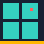
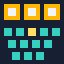
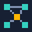

About
I study Mechatronics and Automation at VIT Chennai (2023–2027). I like projects where hardware and software have to work together, and I try to finish them properly: tested, documented and handed over so someone else can run them.
I lead Team MOVIS, our university robotics team, and serve as its safety officer. I am also Vice President of the AUTOVIT automotive club. In summer 2025 I interned at HÄNDLE GmbH in Germany on industrial plant design and process engineering.
Projects
-

Tile Inspection Line
Automated tile grading and sorting that combines machine vision with impact-acoustic testing, fused so it fails closed, and drives a Cartesian pick-and-place gantry. B.Tech capstone, 2026.
-
HERC-26 Rover
Competition rover for the Human Exploration Rover Challenge. A Raspberry Pi and an Arduino Mega share the work, the rover hard-stops on signal loss, and a web dashboard reads live telemetry.
-
Look-Ahead Signals
Traffic lights that look one junction ahead instead of running a fixed timetable. In a deliberately hard simulation they cut queueing delay by about 30% below saturation, and stayed moving when a 2×2 grid was pushed past capacity. Smart India Hackathon 2024 team.
-

MyOwnEnigma
The WWII Enigma cipher rebuilt in Verilog on an Arty S7 FPGA, with a 9×4 keyboard matrix, a lamp board, a KiCAD schematic and a 3D-printed case.
-
PLC 2-DOF Robotic Arm
A two-axis pick-and-place arm that lifts a 5 kg part with an electromagnet. The structure was checked in Ansys before building; it runs from an industrial PLC with a touch-panel HMI.
-

ROS 2 Mobile Robots
Two ROS 2 robots taken from simulation to working runs on hardware. Acrux drives a waypoint mission on Nav2; BeetleBot patrols a zoned floor and warns when something moves.
Also: Magnet-Embed Print Assistant, an add-on applicator and control app that pauses a 3D print at the right layer, places a magnet in a printed pocket, and prints over it.
Experience
-
Jul 2025 – Present
Team Lead & Safety Officer · Team MOVIS
Coordinate the electrical, mechanical and programming divisions for NASA HERC 2026 and the ISRO Robotics Challenge. Earlier roles on the team: member (since Mar 2024), finance manager and programming team lead.
-
Jul 2025 – Present
Vice President · AUTOVIT Club, VIT Chennai
Run club operations and events, and help organise workshops on ROS, 3D printing and Raspberry Pi.
-
Jun – Jul 2025
Intern, Sales & Process Engineering · HÄNDLE GmbH, Germany
Worked on industrial plant design, hydraulic system analysis, extrusion process simulation and robot cycle planning for loading and unloading, with hands-on CNC work.
-
2023 – 2027
B.Tech Mechatronics & Automation · VIT Chennai
Sensors and instrumentation, microcontrollers, control systems, and AI applied to industrial inspection.
Contact
The quickest way to reach me is through LinkedIn. My code and project write-ups are on GitHub.